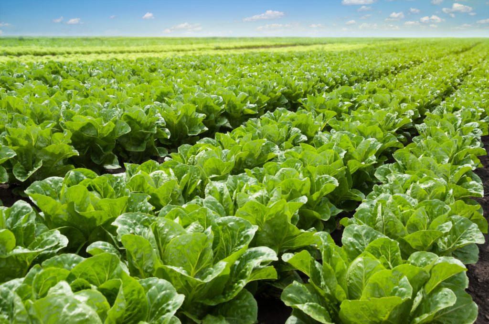

menu
Welcome Back, Farmer!
notifications
email
account_circle
Select Field:
Field 1
Field 2
Field 3
Field 4
Field 5

Row 01
Field Status
Field status here
Soil Health
Soil Health status here
Pest & Disease Alerts,
Pest & Disease Alerts status here
Field Recommandations
Personalized consulting services to farmers based on the data and insights gathered from their fields.